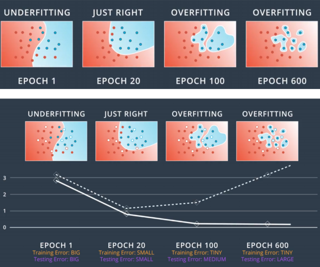

Chapter 12 – Early-stopping, Dropout & Mini-batch¶
Early-stopping¶
One of the main reason for overfitting is that the student studies too hard (too much epoch/iteration). So we need to let the program know that it needs to stop when it is about to overfit. If everything goes well, then the cost should be decreasing with more epoch/iterations. However, after certain epoch, the accuracy begins to drop, then we should stop at this iteration as more iterations would result in overfitting. This is known as the Early Stopping. A simple method to evaluate the underfitting and overfitting is shown below:
def evaluate(self, test_data):
"""Return the number of test inputs for which the neural
network outputs the correct result. Note that the neural
network's output is assumed to be the index of whichever
neuron in the final layer has the highest activation."""
test_results = [(np.argmax(self.feedforward(x)), y)
for (x, y) in test_data]
return sum(int(x == y) for (x, y) in test_results)
Dropout¶
In the neural net, we have lots of neurons. If those neurons keep working without taking a rest, then it is highly likely to make the model overfit. Thus, we choose to drop out some neurons and let it rest, while keeping the others working, and do it over and over again over iterations with different sets of neurons.

There are different ways of understanding how this approach helps to resolve the problem of overfitting. In philosophy, the drop out increases the diversity of the net. With the `new blood’ from the other neurons, each set of weights are different and are therefore more likely to perform better. The other explanation is that each neuron learns certain features in the data set, if lots of neurons learn a particular feature at the same time, then it would not be performing better than single individual neuron who is in charge of its own feature and then many of those neurons combined.
A related heuristic explanation for dropout is given in one of the earliest papers to use the technique: “This technique reduces complex co-adaptations of neurons, since a neuron cannot rely on the presence of particular other neurons. It is, therefore, forced to learn more robust features that are useful in conjunction with many different random subsets of the other neurons.” In other words, if we think of our network as a model which is making predictions, then we can think of dropout as a way of making sure that the model is robust to the loss of any individual piece of evidence. In this, it’s somewhat similar to L1 and L2 regularization, which tend to reduce weights, and thus make the network more robust to losing any individual connection in the network.
Mini-batch¶
There are a number of challenges in applying the gradient descent rule. To understand what the problem is, let’s look back at the cost equation 11 in chapter Gradient Descent 2. Notice that this cost function has the form of summation, that is, it’s an average over costs or individual training examples (e.g. the average of all four students). In practice, to compute the gradient \(\nabla C\) we need to compute the gradients of \(\nabla C_x\) separately for each training input, \(x\), and then average them. Unfortunately, when the number of training inputs is very large this can take a long time, and learning thus occurs slowly.
An idea called stochastic gradient descent can be used to speed up learning. The idea is to estimate the gradient \(\nabla C\) by computing \(\nabla C_x\) for a small sample of randomly chosen training inputs. By averaging over this small sample it turns out that we can quickly get a good estimate of the true gradient \(\nabla C\), and this helps speed up gradient descent, and thus learning.
To make these ideas more precise, stochastic gradient descent works by randomly picking out a small number \(m\) of randomly chosen training inputs. We’ll label those random training inputs \(X_1\),\(X_2\),…,\(X_m\), and refer to them as a mini-batch. Provided the sample size \(m\) is large enough we expect that the average value of the \(\nabla C_{X_j}\) will be roughly equal to the average over all \(\nabla C_x\), that is
\begin{equation} \frac{\sum^m_{j=1\nabla C_{X_j}}}{m} \approx \frac{\sum_x \nabla C_x}{n} = \nabla C \end{equation} where the second sum is over the entire set of training data.
Swapping sides we get
\begin{equation} \nabla C \approx \frac{\sum^m_{j=1\nabla C_{X_j}}}{m} \end{equation}
confirming that we can estimate the overall gradient by computing gradients just for the randomly chosen mini-batch.
To connect this explicitly to learning in neural networks, suppose \(w_k\) and \(b_l\) denote the weights and biases in our neural network. Then stochastic gradient descent works by picking out a randomly chosen mini-batch of training inputs, and training with those,
\begin{equation} w_i^{‘} = w_i - \eta \nabla C = w_i - \eta \frac{1}{m} \sum_{i=1}^{m_{j}} \frac{\delta C_{X_j}}{\delta w_k} \end{equation}
where the sums are over all the training examples \(X_j\) in the current mini-batch. Then we pick out another randomly chosen mini-batch and train with those. And so on, until we’ve exhausted the training inputs, which is said to complete an epoch of training. At that point we start over with a new training epoch.
We can think of stochastic gradient descent as being like political polling: it’s much easier to sample a small mini-batch than it is to apply gradient descent to the full batch, just as carrying out a poll is easier than running a full election. For example, if we have a training set of size \(n=60,000\), as in MNIST, and choose a mini-batch size of (say) \(m=10\), this means we’ll get a factor of \(6,000\) speedup in estimating the gradient! Another example would be instead of calculating the average cost gradient for all four students, calculate three students and pray that those randomly chosen three students can represent the four students on average. Of course, the estimate won’t be perfect - there will be statistical fluctuations - but it doesn’t need to be perfect: all we really care about is moving in a general direction that will help decrease \(C\), and that means we don’t need an exact computation of the gradient. In practice, stochastic gradient descent is a commonly used and powerful technique for learning in neural networks, and it’s the basis for most of the learning techniques we’ll develop in this book.
Recall from the chapter backpropagation that the code of backprop method was contained in the update_mini_batch of the Network class. In particular, the update_mini_batch method updates the Network’s weights and biases by computing the gradient for the current mini_batch of training examples:
class Network(object):
...
def update_mini_batch(self, mini_batch, eta):
"""Update the network's weights and biases by applying
gradient descent using backpropagation to a single mini batch.
The "mini_batch" is a list of tuples "(x, y)", and "eta"
is the learning rate."""
nabla_b = [np.zeros(b.shape) for b in self.biases]
nabla_w = [np.zeros(w.shape) for w in self.weights]
for x, y in mini_batch:
delta_nabla_b, delta_nabla_w = self.backprop(x, y)
nabla_b = [nb+dnb for nb, dnb in zip(nabla_b, delta_nabla_b)]
nabla_w = [nw+dnw for nw, dnw in zip(nabla_w, delta_nabla_w)]
self.weights = [w-(eta/len(mini_batch))*nw
for w, nw in zip(self.weights, nabla_w)]
self.biases = [b-(eta/len(mini_batch))*nb
for b, nb in zip(self.biases, nabla_b)]